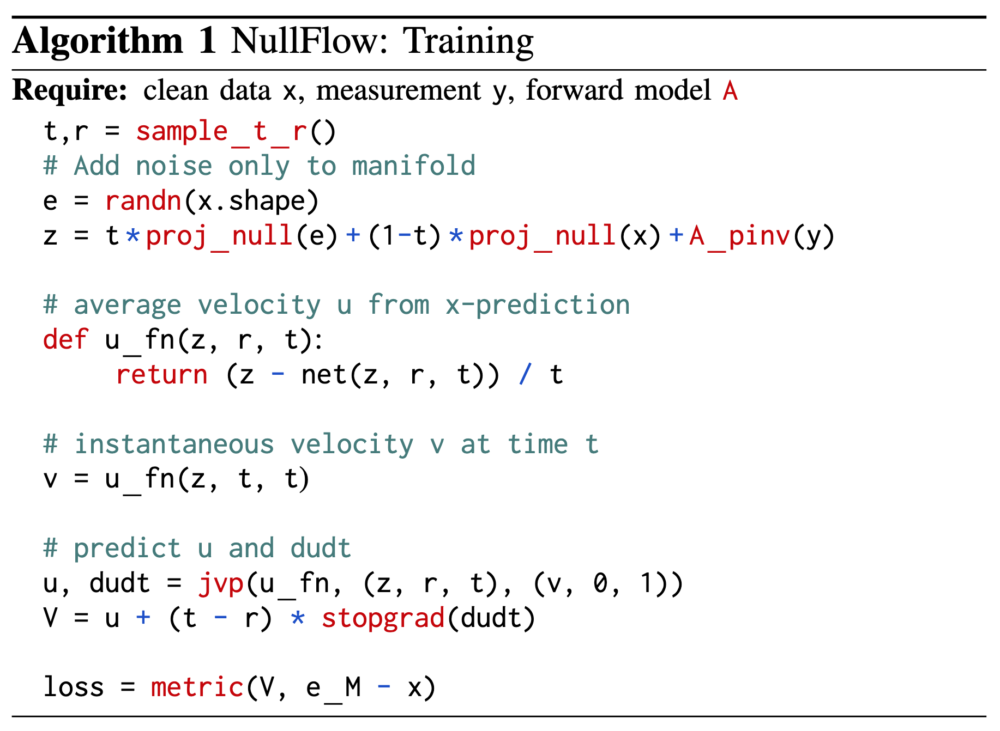
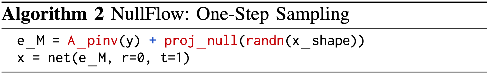
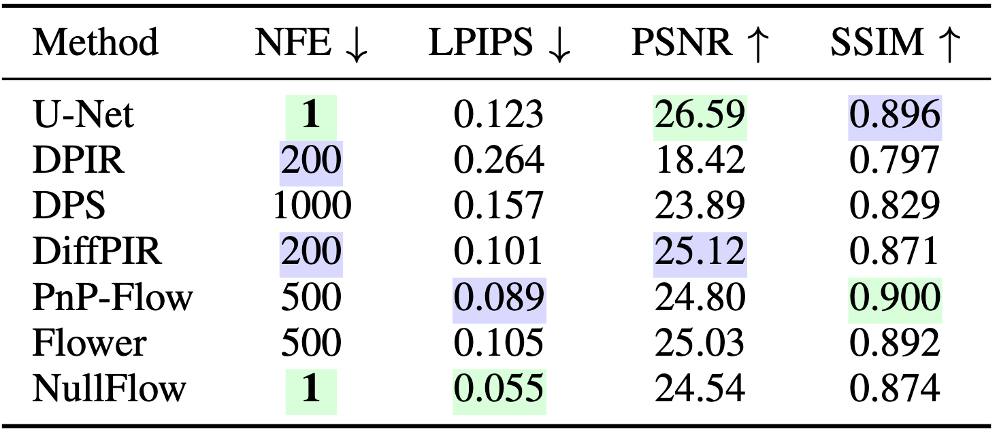

Figure 1. NullFlow is able to reconstruct in a single step without leaving the measurement-consistent subspace My := { x : Ax = y } by learning the average velocity u0,1(x1|y) rather than the instantaneous velocity vt(xt|y) of a flow confined to My.
This figure illustrates the central design of NullFlow: the flow is restricted to the affine measurement-consistent subspace, whose tangent directions lie in the null space of the forward operator. By learning the average velocity of this restricted flow, NullFlow avoids step-by-step integration and produces a reconstruction in one network evaluation.
Abstract
We propose NullFlow, a principled framework for one-step generative image reconstruction. The key idea is to confine the generative flow to a measurement-consistent subspace. Because the flow never leaves this subspace, NullFlow needs no separate data-fidelity corrections, unlike existing solvers. NullFlow samples in a single network evaluation by learning the flow’s average velocity, avoiding the step-by-step integration of traditional flow matching methods.
NullFlow Training Algorithm

Algorithm 1. NullFlow training procedure. Given a clean image, measurement, and forward operator, the algorithm samples time variables, perturbs only the null-space component, evaluates the average-velocity network, and uses a JVP-based MeanFlow target to train the model. This encourages the learned update to stay within the measurement-consistent subspace while producing a one-step posterior sample at inference.
One-Step Sampling

Algorithm 2. One-step sampling with NullFlow. The reconstruction is initialized as the pseudo-inverse measurement plus a projected null-space random vector, and the trained network is evaluated once to produce the final image.
At inference, NullFlow starts from a measurement-consistent initialization and applies the learned model once. This directly maps a null-space Gaussian initialization to a reconstruction, avoiding the hundreds or thousands of network evaluations typically required by iterative diffusion or flow-based solvers.
Numerical Evaluations

Figure 2. Reconstructions on a test image. Left to right: measurement, U-Net, Flower, a single NullFlow sample, and the average of 100 NullFlow samples. PSNR/LPIPS are shown in the top-left corner of each. A single NullFlow sample is sharp and perceptually faithful (best LPIPS), whereas averaging many samples approaches the MMSE estimate, trading perceptual quality for lower distortion and visibly resembling the MSE-trained U-Net.

Figure 3. Effect of sample averaging on reconstruction quality. Averaging an increasing number of posterior samples approximates the MMSE estimator, leading to improved PSNR and SSIM but degraded LPIPS. The dashed lines denote the performance of a supervised U-Net trained to minimize MSE. Notably, while MMSE averaging can surpass U-Net in distortion-based metrics, it produces perceptually smoother reconstructions.

Figure 4. Quantitative results on natural image inpainting problem.
BibTeX
@article{shi2026nullflow,
title={NullFlow: One-Step Generative Reconstruction},
author={Shi, Xiao and Chandler, Edward P and Park, Chicago Y and Shoushtari, Shirin and Kamilov, Ulugbek S},
journal={arXiv preprint arXiv:2606.22696},
year={2026}
}